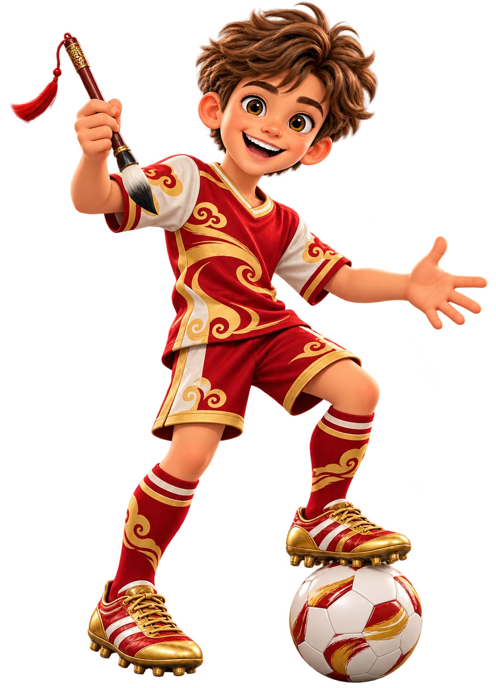

56 тем · 2 занятия подготовлены · 8 смысловых блоков
Тренер Иероглифов Егор, 你好! Начинаем китайский с нуля: будем слушать и различать тоны, читать пиньинь, говорить короткими фразами и постепенно осваивать иероглифы. Проходи темы по порядку — от первого приветствия до рассказа о себе и своей семье.

⚽
Голы по китайскому 0 / 16за верные ответы в уроках №1–2
Блок 1. Первый шаг в китайский
Блок 2. Пиньинь без путаницы
Блок 3. Первые иероглифы
Блок 4. Давайте познакомимся
Блок 5. Мои друзья
Блок 6. Числа и день рождения
Блок 7. Страна, город и адрес
Блок 8. Моя семья и профессии
Урок №1 доступен. Набери 8 / 8 голов — и откроется урок №2 «Китайский язык: четыре ключа».
📖 Словарь курса
звук · пиньинь · перевод
Мои китайские слова
Ищи слово по иероглифам, пиньиню или русскому переводу. Нажми на динамик, послушай и повтори вслух.
Русская запись — только подсказка для старта
Показано слов: 8
Урок 1 · изучено
你好
nǐ hǎo
Привет!
Русская подсказка: «ни хао»
Урок 2 · изучено
你
nǐ
Ты
Русская подсказка: «ни»
Урок 2 · изучено
好
hǎo
Хороший · хорошо
Русская подсказка: «хао»
Следующие темы
您好
nín hǎo
Здравствуйте
Русская подсказка: «нин хао»
Следующие темы
我
wǒ
Я
Русская подсказка: «во»
Следующие темы
是
shì
Быть · являться
Русская подсказка: «шы»
Следующие темы
再见
zàijiàn
До свидания!
Русская подсказка: «цзай цзянь»
Следующие темы
谢谢
xièxie
Спасибо!
Русская подсказка: «се-се»
Такого слова пока нет. Попробуй другой запрос.
⚽ Повторяем слова
дополнительные игры
Тренировочный центр
Здесь собраны игры на слова из разных тем. Они помогают повторять материал, но не заменяют уроки и не влияют на 16 учебных голов.
Можно возвращаться в любое время
🏮
Первые 30 слов
Большая игра Wordwall для общего повторения слов из разных тем курса.
Wordwall30 словИгра 1
✓ Тренировка уже открывалась
⚽
Цвета
Игровая тренировка Wordwall для закрепления названий цветов на китайском языке.
WordwallНазвания цветовЦвета
✓ Тренировка уже открывалась
🔟
Счёт до 10
Игровая тренировка Wordwall: узнаём и повторяем китайские числа от 1 до 10.
WordwallЧисла 1–10Счёт до 10
✓ Тренировка уже открывалась
🔊
Слушаем и выбираем
Услышь китайское слово и найди его значение.
Скоро
🀄
Иероглиф ↔ перевод
Соедини китайскую запись с правильным русским значением.